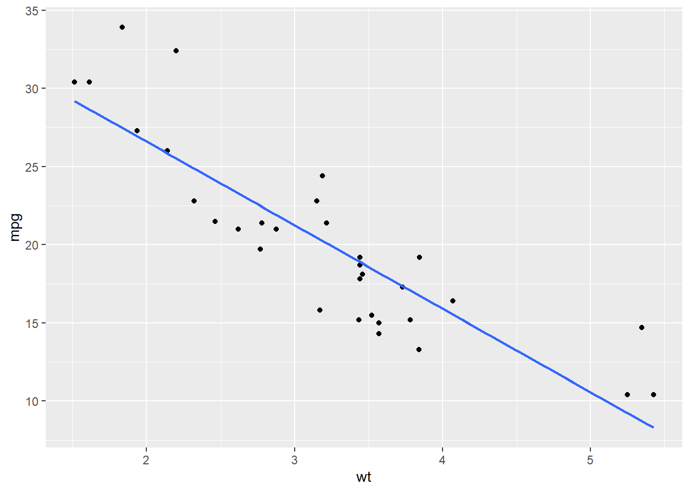

result <- c(1, 2)
result[1] 1 2credit to Maisie Zhang, the first Stats 101 head tutor, for compiling this guide.
Note that you must install R before RStudio and both programs are required
# leads a comment line$ extracts elements by name from a named list and is often used as <data.frame>$<column>% is not accepted as percentage and percentage needs to be expressed as fraction<- (left arrow) assigns a value to a name
x <- 2 + 3%>% indicates that you are passing the result of one function to the next function. Requires the tidyverse packageR by default comes with many built-in tools however the real power of the program comes from the packages others have written to extend R.
To install a new package, there are two options:
install.packages ("ggplot2")then, on the command line, type:
library(ggplot2)You only need to install a package once. However, each time you restart R, you must load the library again using the
library()command
Usually in this class we will be using dpylr package to do most calculations and data manipulation. But in some cases you may find it faster to use the base R functions.
help() : the primary interface to the help systems
example:
help(mean)
A more convenient way is to type just ? and the function name. For example, help(mean) and ?mean work the same
c(): combines values into a vector or list
result <- c(1, 2)
result[1] 1 2mean(x, na.rm = FALSE): arithmetic mean
mean(mtcars$mpg)[1] 20.09062sd(x, na.rm = FALSE): sample standard deviation which uses denominator n-1
sd(mtcars$mpg)[1] 6.026948Note this function does NOT calculate population SD but the sample SD
summary(): for numeric variables, returns minimum, 1st quartile, median, mean, 3rd quartile, and maximum; for categorical variables, returns counts of all categories
summary(mtcars$mpg) Min. 1st Qu. Median Mean 3rd Qu. Max.
10.40 15.43 19.20 20.09 22.80 33.90 The usual way to operate on data in this class is with pipes %>%; a pipe will carry over the result of one calculation to the following calculation. You can create arbitrarily long computation chains that can save you a lot of typing over using the built-in R functions.
To do some of the calculations in the following sections, you can do instead:
mean(mtcars$mpg) piped version:
mtcars %>%
summarize(mean = mean(mpg)) mean
1 20.09062We can combine the mean() and the sd() function in one command like the following:
mtcars %>%
summarize(mean = mean(mpg), sd = sd(mpg)) mean sd
1 20.09062 6.026948All datasets in this class are in .csv format (comma separated values). To import a .csv dataset, you need to:
Heading: Yesna.strings: if the dataset has any missing values, enter the code for missing valuesStrings as factors: make sure this is tickedIn R, categorical variables are represented as factors. So be careful here as some string values that are simply ID variables should not be classified as factors. There are a number of R commands that can convert between strings and factors later if you need to clean up your dataset after importing it.
rm(mtcars)
The datasets we work with in R are not very large so I don’t recommend removing any datasets from memory. Once you delete it, there is no way to recover the dataset.
mpgcars <- mtcarsR stores categorical variables as a type of variable called a factor. This is different than variables stored as simply text - R will not perform any operations in variables stored simply as text.
To convert between text and factors, you can use the following commands:
fruits <- c("apple", "pear", "banana")
# Will not work properly because the variable is a text variable
summary(fruits) Length Class Mode
3 character character # The factor command will convert it to a factor so R can interpret the contents
summary(factor(fruits)) apple banana pear
1 1 1 It is not a commonly used function, but if for some reason you need to convert back to text, you can use as.character() or as.numeric()
fruits <- factor(fruits)
# Converts a factor back to text. as.numeric() does the same if the factor names are numbers
as.character(fruits)[1] "apple" "pear" "banana"mtcars %>%
select(mpg) mpg
Mazda RX4 21.0
Mazda RX4 Wag 21.0
Datsun 710 22.8
Hornet 4 Drive 21.4
Hornet Sportabout 18.7
Valiant 18.1
Duster 360 14.3
Merc 240D 24.4
Merc 230 22.8
Merc 280 19.2
Merc 280C 17.8
Merc 450SE 16.4
Merc 450SL 17.3
Merc 450SLC 15.2
Cadillac Fleetwood 10.4
Lincoln Continental 10.4
Chrysler Imperial 14.7
Fiat 128 32.4
Honda Civic 30.4
Toyota Corolla 33.9
Toyota Corona 21.5
Dodge Challenger 15.5
AMC Javelin 15.2
Camaro Z28 13.3
Pontiac Firebird 19.2
Fiat X1-9 27.3
Porsche 914-2 26.0
Lotus Europa 30.4
Ford Pantera L 15.8
Ferrari Dino 19.7
Maserati Bora 15.0
Volvo 142E 21.4To select multiple columns you can do:
mtcars %>%
select(c(mpg, cyl)) mpg cyl
Mazda RX4 21.0 6
Mazda RX4 Wag 21.0 6
Datsun 710 22.8 4
Hornet 4 Drive 21.4 6
Hornet Sportabout 18.7 8
Valiant 18.1 6
Duster 360 14.3 8
Merc 240D 24.4 4
Merc 230 22.8 4
Merc 280 19.2 6
Merc 280C 17.8 6
Merc 450SE 16.4 8
Merc 450SL 17.3 8
Merc 450SLC 15.2 8
Cadillac Fleetwood 10.4 8
Lincoln Continental 10.4 8
Chrysler Imperial 14.7 8
Fiat 128 32.4 4
Honda Civic 30.4 4
Toyota Corolla 33.9 4
Toyota Corona 21.5 4
Dodge Challenger 15.5 8
AMC Javelin 15.2 8
Camaro Z28 13.3 8
Pontiac Firebird 19.2 8
Fiat X1-9 27.3 4
Porsche 914-2 26.0 4
Lotus Europa 30.4 4
Ford Pantera L 15.8 8
Ferrari Dino 19.7 6
Maserati Bora 15.0 8
Volvo 142E 21.4 4More details on advanced select commands can be found here:
mtcars %>%
filter(cyl==6) mpg cyl disp hp drat wt qsec vs am gear carb
Mazda RX4 21.0 6 160.0 110 3.90 2.620 16.46 0 1 4 4
Mazda RX4 Wag 21.0 6 160.0 110 3.90 2.875 17.02 0 1 4 4
Hornet 4 Drive 21.4 6 258.0 110 3.08 3.215 19.44 1 0 3 1
Valiant 18.1 6 225.0 105 2.76 3.460 20.22 1 0 3 1
Merc 280 19.2 6 167.6 123 3.92 3.440 18.30 1 0 4 4
Merc 280C 17.8 6 167.6 123 3.92 3.440 18.90 1 0 4 4
Ferrari Dino 19.7 6 145.0 175 3.62 2.770 15.50 0 1 5 6As with the column example, multiple criteria can be used:
mtcars %>%
filter(cyl==6 & hp==110) mpg cyl disp hp drat wt qsec vs am gear carb
Mazda RX4 21.0 6 160 110 3.90 2.620 16.46 0 1 4 4
Mazda RX4 Wag 21.0 6 160 110 3.90 2.875 17.02 0 1 4 4
Hornet 4 Drive 21.4 6 258 110 3.08 3.215 19.44 1 0 3 1More details on advanced filter commands can be found here:
The main dplyr verb for recoding a variable is mutate. With mutate, you can either simply rescale a variable or do more complex transformations, such as the following:
# Weight is defined as 1000s of pounds; a ton is 2000 pounds
mtcars <- mtcars %>%
mutate(tons = (wt / 2000) * 1000)A more complex transformation using the helper function case_when:
# Note we need to convert the strings to a factor after the case_when call
mtcars <- mtcars %>%
mutate(cartype = case_when(
tons < 1 ~ "light",
tons >= 1 & tons < 2 ~ "medium",
tons > 2 ~ "heavy"
)) %>%
mutate(cartype = factor(cartype))More details on advanced mutate commands can be found here:
More details on advanced case_when commands can be found here:
Many datasets have missing values (for a variety of reasons). It is always important to check if your dataset has any missing values (in R, these are stored by default as NA).
To check the total number of missing values, we can use the following:
mtcars.missing <- mtcars
# Make the first observation missing
mtcars.missing[1,1] <- NA
colSums(is.na (mtcars.missing)) mpg cyl disp hp drat wt qsec vs am gear
1 0 0 0 0 0 0 0 0 0
carb tons cartype
0 0 0 Most functions in R have a flag to remove missing values. If there is a missing value, the function will return an error if the flag is not set.
mean(mtcars.missing$mpg)[1] NAmean(mtcars.missing$mpg, na.rm=TRUE)[1] 20.06129Sometimes cases with missing values suggest that certain types of observations are not stored properly. It is always important to check if there are any patterns in the observations with missing values before removal.
The simpliest way to summarize data is the summary() command.
summary(mtcars$mpg) Min. 1st Qu. Median Mean 3rd Qu. Max.
10.40 15.43 19.20 20.09 22.80 33.90 To develop more complex summary statistics, you can use longer piped structures from dplyr as follows:
mtcars %>%
group_by(cyl) %>%
summarise(mean = mean(wt), n = n())# A tibble: 3 × 3
cyl mean n
<dbl> <dbl> <int>
1 4 2.29 11
2 6 3.12 7
3 8 4.00 14To view more samples of the summarize() function, see here:
If you want to find out details of the normal distribution, there are a suite of function in R that can report the quantile of a specific number of standard deviations from the center of a normal distribution or the reverse.
# What is the amount of area under the normal curve cumulative up to +2 sd from the mean
pnorm(2, mean=0, sd=1)[1] 0.9772499# At how many standard deviations away from the mean is 97.5% of the area under the normal curve
qnorm(0.975, mean=0, sd=1)[1] 1.959964If you have an arbitrary distribution (that may not necessarily be normally distributed), you can find a quantile for a given percentage of area under the curve with the quantile() function.
# generate a uniform distribution
dist<-runif(1000, min=0, max=1)
# theoretically, the quantile should match the probability for a uniform distribution
quantile(dist, probs=0.5) 50%
0.5212443 Creating a frequency table is quite easy in R.
table(mtcars$cyl, mtcars$gear)
3 4 5
4 1 8 2
6 2 4 1
8 12 0 2addmargins(table(mtcars$cyl, mtcars$gear))
3 4 5 Sum
4 1 8 2 11
6 2 4 1 7
8 12 0 2 14
Sum 15 12 5 32So is making a contingency table.
prop.table(table(mtcars$cyl, mtcars$gear))
3 4 5
4 0.03125 0.25000 0.06250
6 0.06250 0.12500 0.03125
8 0.37500 0.00000 0.06250addmargins(prop.table(table(mtcars$cyl, mtcars$gear)))
3 4 5 Sum
4 0.03125 0.25000 0.06250 0.34375
6 0.06250 0.12500 0.03125 0.21875
8 0.37500 0.00000 0.06250 0.43750
Sum 0.46875 0.37500 0.15625 1.00000Changing the method of calculating the margins can be done with the margin option.
prop.table(table(mtcars$cyl, mtcars$gear), margin=1)
3 4 5
4 0.09090909 0.72727273 0.18181818
6 0.28571429 0.57142857 0.14285714
8 0.85714286 0.00000000 0.14285714prop.table(table(mtcars$cyl, mtcars$gear), margin=2)
3 4 5
4 0.06666667 0.66666667 0.40000000
6 0.13333333 0.33333333 0.20000000
8 0.80000000 0.00000000 0.40000000Histograms are quite easy using ggplot.
ggplot(mtcars, aes(x=wt)) +
geom_histogram()Details on how to modify the graphical parameters of geom_histogram() can be found here:
Remember, histograms should only be use for quantitative data. Even if a categorical variable is numeric (cylinders, for example), you should represent that variable with a bar chart.
Boxplots are useful if you want to compare the distribution of a variable across several different categories. For example, boxplots are a good way to compare the distribution of car weight by number of cylinders in a car.
ggplot(mtcars, aes(x=factor(cyl), y=wt)) +
geom_boxplot()The grouping variable
xmust be categorical in the box plot call
Details on how to modify the graphical parameters of geom_boxplot() can be found here:
Bar charts are the best way to display the distribution of categorical variables. Since we generally don’t assign importance to the order or distance between categories, we can only simply show the count of each category independently.
ggplot(mtcars, aes(x=factor(cyl))) +
geom_bar()Details on how to modify the graphical parameters of geom_bar() can be found here:
QQ plots are useful to determine if a distribution is normal shaped. While we won’t discuss it in this class, it may be helpful for certain projects you work on. Similar to other singe variable ggplots, you can create one as follows:
ggplot(mtcars, aes(sample=wt)) +
geom_qq() +
geom_qq_line()Information on how to interpret these plots can be found in Chapter 5 of the textbok.
Details on how to modify the graphical parameters of geom_qq() can be found here:
Scatterplots are the most common way to display a two-variable relationship and are one of the most common graphical displays.
ggplot(mtcars, aes(x=wt, y=mpg)) +
geom_point()
Remember that your response variable should always be on the y axis on a scatterplot
It is relatively common to add a line of best fit into a scatterplot to summarize the relationship between the two variables. You can do so by using the geom_smooth() function.
ggplot(mtcars, aes(x=wt, y=mpg)) +
geom_point() +
geom_smooth(method=lm, se=FALSE)
There are a number of different options for how to choose a best fit line, remember to select the one that you think best represents the relationship between the two variables.
Details on how to modify the graphical parameters of geom_point() and geom_smooth() can be found here:
One helpful graphical display to quickly summarize the relationship between many variables is a correlation plot. It displays the correlation between the variables you specify in your dataset. First, you need to work out which variables you want to include in the correlation matrix.
mtcars.subset <- mtcars %>%
select(c(mpg, cyl, wt, disp))
# use = complete.obs here in case of missing values
mtcars.cor <- cor(mtcars.subset, use="complete.obs")
mtcars.cor mpg cyl wt disp
mpg 1.0000000 -0.8521620 -0.8676594 -0.8475514
cyl -0.8521620 1.0000000 0.7824958 0.9020329
wt -0.8676594 0.7824958 1.0000000 0.8879799
disp -0.8475514 0.9020329 0.8879799 1.0000000Then simply use the ggcorrplot() function.
ggcorrplot(mtcars.cor)Details on how to modify the graphical parameters of ggcorrplot() can be found here:
You can modify ggplots to add many different features. Below is a short list of basic things you can add but this is not by far a complete list.
ggplot (mtcars, aes(x = wt)) +
geom_histogram(fill = "#FF6666", alpha = 0.8, color = "black", linetype = "dashed", size = 1)ggplot(mtcars, aes (x = wt)) +
geom_histogram() +
xlab("Weight") +
ylab ("Count") +
ggtitle("Weight of Cars in the MPG Dataset")ggplot(mtcars, aes(x = wt)) +
geom_histogram () +
geom_vline(aes(xintercept = mean(wt))) +
geom_hline(aes(yintercept = 3))Often it can be helpful to combine many plots of the same time (histograms, for example) into one larger plot. To do this, you will need to install the gridExtra package.
library(gridExtra)
p1 <- ggplot(mtcars, aes(x = wt)) +
geom_histogram ()
p2 <- ggplot(mtcars, aes(x = hp)) +
geom_histogram ()
grid.arrange(p1, p2)Details on how to modify the graphical parameters of grid.arrange() can be found here:
The default dplyr method of calculating a correlation can only do a two variable comparison.
mtcars %>%
summarize(cor(wt, mpg)) cor(wt, mpg)
1 -0.8676594To calculate the correlation between many variables, we can use the advanced package corrr as follows:
library(corrr)
mtcars %>%
select(c(mpg, disp, wt)) %>%
correlate()# A tibble: 3 × 4
term mpg disp wt
<chr> <dbl> <dbl> <dbl>
1 mpg NA -0.848 -0.868
2 disp -0.848 NA 0.888
3 wt -0.868 0.888 NA The corrr package has many advanced features and graphical capabilities if you need to calculate something more specific than the correlation matrix of the dataset.
Details on corr() can be found here:
The standard way to calculate a regression is as follows, with the response variable on the left and the predictor variable on the right:
fit <- lm(data=mtcars, mpg ~ wt)
summary(fit)
Call:
lm(formula = mpg ~ wt, data = mtcars)
Residuals:
Min 1Q Median 3Q Max
-4.5432 -2.3647 -0.1252 1.4096 6.8727
Coefficients:
Estimate Std. Error t value Pr(>|t|)
(Intercept) 37.2851 1.8776 19.858 < 2e-16 ***
wt -5.3445 0.5591 -9.559 1.29e-10 ***
---
Signif. codes: 0 '***' 0.001 '**' 0.01 '*' 0.05 '.' 0.1 ' ' 1
Residual standard error: 3.046 on 30 degrees of freedom
Multiple R-squared: 0.7528, Adjusted R-squared: 0.7446
F-statistic: 91.38 on 1 and 30 DF, p-value: 1.294e-10There is not a particularly elegant means of calculating regressions using the tidy package, however, it is often useful, particularly when conducting many regressions, to use the broom package to return the regression results in a data frame.
library(broom)
tidy(fit)# A tibble: 2 × 5
term estimate std.error statistic p.value
<chr> <dbl> <dbl> <dbl> <dbl>
1 (Intercept) 37.3 1.88 19.9 8.24e-19
2 wt -5.34 0.559 -9.56 1.29e-10For more details on tidy(), you can go here:
To graph the residuals, we can use the augment() function from the broom package to add in the residuals into the results.
aug.fit <- augment(fit)
aug.fit# A tibble: 32 × 9
.rownames mpg wt .fitted .resid .hat .sigma .cooksd .std.resid
<chr> <dbl> <dbl> <dbl> <dbl> <dbl> <dbl> <dbl> <dbl>
1 Mazda RX4 21 2.62 23.3 -2.28 0.0433 3.07 1.33e-2 -0.766
2 Mazda RX4 Wag 21 2.88 21.9 -0.920 0.0352 3.09 1.72e-3 -0.307
3 Datsun 710 22.8 2.32 24.9 -2.09 0.0584 3.07 1.54e-2 -0.706
4 Hornet 4 Drive 21.4 3.22 20.1 1.30 0.0313 3.09 3.02e-3 0.433
5 Hornet Sportabout 18.7 3.44 18.9 -0.200 0.0329 3.10 7.60e-5 -0.0668
6 Valiant 18.1 3.46 18.8 -0.693 0.0332 3.10 9.21e-4 -0.231
7 Duster 360 14.3 3.57 18.2 -3.91 0.0354 3.01 3.13e-2 -1.31
8 Merc 240D 24.4 3.19 20.2 4.16 0.0313 3.00 3.11e-2 1.39
9 Merc 230 22.8 3.15 20.5 2.35 0.0314 3.07 9.96e-3 0.784
10 Merc 280 19.2 3.44 18.9 0.300 0.0329 3.10 1.71e-4 0.100
# ℹ 22 more rowsAnd then we can graph the residuals as follows:
ggplot(aug.fit, aes(x=.fitted, y=.resid)) +
geom_point()ggplot(aug.fit, aes(x=.resid)) +
geom_histogram()Multiple regression works similarly to two variable regressions. You can easily construct advanced models (including categorical predictors and interaction terms) using the lm() command:
# Three variable regression
mod1 <- lm(data=mtcars, mpg~disp+wt)
tidy(mod1)# A tibble: 3 × 5
term estimate std.error statistic p.value
<chr> <dbl> <dbl> <dbl> <dbl>
1 (Intercept) 35.0 2.16 16.2 4.91e-16
2 disp -0.0177 0.00919 -1.93 6.36e- 2
3 wt -3.35 1.16 -2.88 7.43e- 3# Model with a categorical predictor
mod2 <- lm(data=mtcars, mpg~wt+factor(cyl))
tidy(mod2)# A tibble: 4 × 5
term estimate std.error statistic p.value
<chr> <dbl> <dbl> <dbl> <dbl>
1 (Intercept) 34.0 1.89 18.0 6.26e-17
2 wt -3.21 0.754 -4.25 2.13e- 4
3 factor(cyl)6 -4.26 1.39 -3.07 4.72e- 3
4 factor(cyl)8 -6.07 1.65 -3.67 9.99e- 4# Model with an interaction term
mod3 <- lm(data=mtcars, mpg~wt+factor(cyl)+factor(cyl)*wt)
tidy(mod3)# A tibble: 6 × 5
term estimate std.error statistic p.value
<chr> <dbl> <dbl> <dbl> <dbl>
1 (Intercept) 39.6 3.19 12.4 2.06e-12
2 wt -5.65 1.36 -4.15 3.13e- 4
3 factor(cyl)6 -11.2 9.36 -1.19 2.44e- 1
4 factor(cyl)8 -15.7 4.84 -3.24 3.22e- 3
5 wt:factor(cyl)6 2.87 3.12 0.920 3.66e- 1
6 wt:factor(cyl)8 3.45 1.63 2.12 4.34e- 2Partial residual plots help graphically display the relationship between a single predictor variable and the response variable after controlling for, or partialling out, the effect of all other predictor variables. If your regression specification meets all of the conditions for linear regression, this plot will illustrate the independent impact of the predictor variable on the response variable.
There are a few packages that can generate these plots, car being perhaps the best supported.
library(car)
crPlots(mod1, terms = ~ ., layout = NULL)You can interpret these graphs as displaying the change in MPG from the mean (listed on the y axis) as displ or wt changes over its range. These are a type of marginal plots - it show the marginal impact of the predictor variable on the response variable after controlling for the impact of all other variables.
Note that in the
crPlot()call, thetermsfunction is a one-sided formula that specifies a subset of the predictor variables for which you would like to generate plots. One component-plus-residual plot is drawn for each regressor. The default~ .is to plot all numeric regressors. You can modify this term to subtract terms with the specificationterms = ~ . - X3, which would plot against all regressors except forX3, whileterms = ~ log(X4)would give the plot for the predictorX4that is represented in the model bylog(X4). If this argument is a quoted name of one of the predictors, the component-plus-residual plot is drawn for that predictor only.
For the
layoutoption, if set to a value likec(1, 1)orc(4, 3), the layout of the graph will have this many rows and columns. If not set, the program will select an appropriate layout. If the number of graphs exceed nine, you must select the layout yourself, or you will get a maximum of nine per page.
For more details on crPlots(), you can go here:
To calculate the confidence interval of a proportion, there are often several steps involved. First you will need to possibly recode the variable and select the cases of interest, then obtain two properties of the sample (sample proportion, sample standard deviation) and find the appropriate \(z\) score (\(z^*\)) needed for your confidence interval.
Remember to check the necessary conditions first!
It is easiet to work with the variable if successes are marked as 1 and failures maked as 0 in the dataset. You may want to recode your variable to make your calculations easier (see Recoding Variables)
mtcars <- mtcars %>%
mutate(heavy = case_when(
tons < 1.5 ~ 0,
tons >= 1.5 ~ 1
))First we need to find the key features of our sample.
heavy.sum.data <- mtcars %>%
summarize(prop = mean(heavy),
len = length(heavy)) %>%
mutate(sd = sqrt(prop*(1-prop)/len))
heavy.sum.data prop len sd
1 0.625 32 0.08558165Remember, the formula for sample sd is \(\sigma(\hat{p})=\sqrt{\frac{pq}{n}}\)
First we need to calculate the margin of error (MOE). In the below example we are interested in a 95% confidence interval. qnorm(0.975) finds the appropriate value of \(z^*\) .
heavy.sum.data <- heavy.sum.data %>%
mutate(moe = sd * qnorm(0.975))Finally, we both subtract and add the MOE to the sample proportion to find the confidence interval.
heavy.sum.data$prop + c(-heavy.sum.data$moe, heavy.sum.data$moe)[1] 0.457263 0.792737The R procedure for mean confidence intervals is very similar to proportions, differing only in the method of calculating the standard deviation, which must be done using the sd() function.
Remember to check the necessary conditions first!
mpg.sum.data <- mtcars %>%
summarize(mean = mean(mpg),
len = length(mpg),
sd = sd(mpg)) %>%
mutate(moe = sd * qnorm(0.975),
lower.bound = mean - moe,
upper.bound = mean + moe)
c(mpg.sum.data$lower.bound, mpg.sum.data$upper.bound)[1] 8.278024 31.903226If we are interested in testing whether there are more heavy cars with 6 cylinders compared to the overall proportion of heavy cars, the R code for such a test is relatively straightforward.
Remember to check the necessary conditions first!
First, identify the hypotheses and calculate the sample information.
\(H_0: 6cyl.heavy.prop = 0.625\)
\(H_a: 6cyl.heavy.prop \neq 0.625\)
mean.heavy <- mean(mtcars$heavy)
hyp.test.prop <- mtcars %>%
filter(cyl==6) %>%
summarize(prop = mean(heavy),
len = length(heavy),
sd = sqrt(mean.heavy*(1-mean.heavy)/len))Note that the sd is calculated as if the null hypothesis were true; we use the population mean to calculate here.
Next, calculate the \(z\) distance between the sample and the population mean.
z.score <- (hyp.test.prop$prop - mean.heavy)/hyp.test.prop$sd
z.score[1] -0.29277Finally, we find the \(p\) value for that difference and compare it to our \(\alpha\) value.
# Note that our test was specified as two sided, therefore we need to multiply by 2
p.value <- (pnorm(-abs(z.score)))*2
p.value[1] 0.7696979There is a 77% chance that one would observe a difference that large or larger from the sample mean by simple sample variation. In other words, we fail to reject the null hypothesis if our \(\alpha\) is 5%.
Hypothesis test for the means are very similar, though in this case we use the sample sd to estimate the population sd.
Remember to check the necessary conditions first!
mean.mpg <- mean(mtcars$mpg)
hyp.test.mean <- mtcars %>%
filter(cyl==6) %>%
summarize(mean = mean(mpg),
len = length(mpg),
sd = sd(mpg)/sqrt(len))Instead of calculating a \(z\) score, because of the need to correct for small sample bias, we must use the \(t\) distribution.
t.score <- (hyp.test.mean$mean - mean.mpg) / hyp.test.mean$sd
df.test <- hyp.test.mean$len - 1
p.value <- pt(-abs(t.score), df=df.test)*2
p.value[1] 0.5500829There is a 55% chance that one would observe a difference that large or larger from the sample mean by simple sample variation. In other words, we fail to reject the null hypothesis if our \(\alpha\) is 5%.
The R code for \(t\) tests is very similar to the code for hypothesis testing.
fourcyl <- mtcars %>%
filter(cyl==4) %>%
summarize(mean=mean(mpg),
len=length(mpg),
sd=sd(mpg))
eightcyl <- mtcars %>%
filter(cyl==8) %>%
summarize(mean=mean(mpg),
len=length(mpg),
sd=sd(mpg))
diff.sd <- sqrt(fourcyl$sd ^ 2 / fourcyl$len + eightcyl$sd ^ 2 / eightcyl$len)
diff.mpg.t <- (fourcyl$mean - eightcyl$mean) / diff.sd
# Note that the df here is just an approximation; the textbook provides the correct formula.
# The rule of thumb method from the the textbook recommends using the lowest df of the two samples
# minus one.
diff.mpg.p <- 2 * pt(-abs(diff.mpg.t), df = min(c(fourcyl$len, eightcyl$len))-1)
diff.mpg.p[1] 1.847002e-05In other words, the odds that, assuming the two samples have the same sample mean, the odds that we would see a difference between the two sample means this large or larger is effectively zero, therefore we can reject the null hypothesis.
R does have a built-in method to do this calculation but you should understand how to achieve the same result by direct calcuation.
fourcyl.data <- mtcars %>%
filter(cyl==4) %>%
select(mpg)
eightcyl.data <- mtcars %>%
filter(cyl==8) %>%
select(mpg)
t.test(fourcyl.data$mpg, eightcyl.data, alternative = "two.sided" , mu = 0, var.equal = FALSE, conf.level = 0.95)
Welch Two Sample t-test
data: fourcyl.data$mpg and eightcyl.data
t = 7.5967, df = 14.967, p-value = 1.641e-06
alternative hypothesis: true difference in means is not equal to 0
95 percent confidence interval:
8.318518 14.808755
sample estimates:
mean of x mean of y
26.66364 15.10000 Due to the first method using a rule of thumb method for calculating the degrees of freedom, the result is slightly different but very close to the R function result.